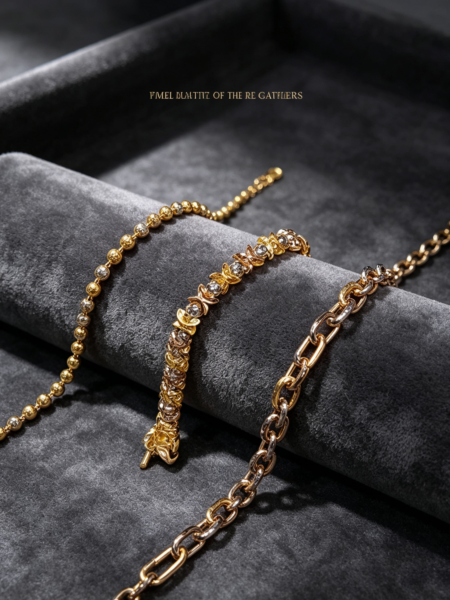
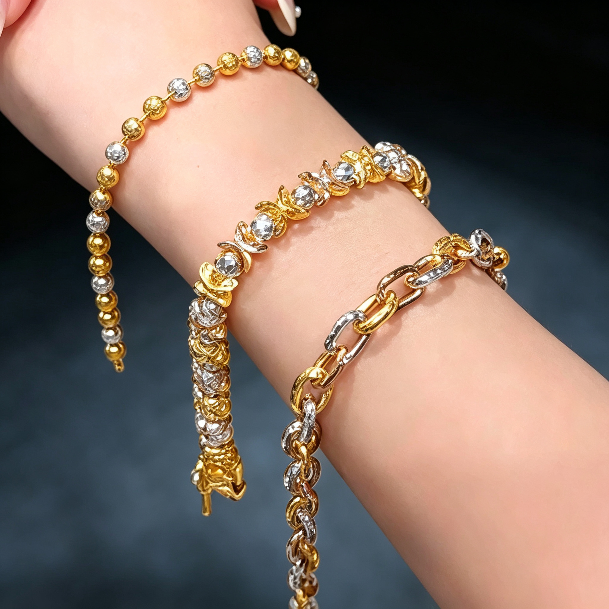
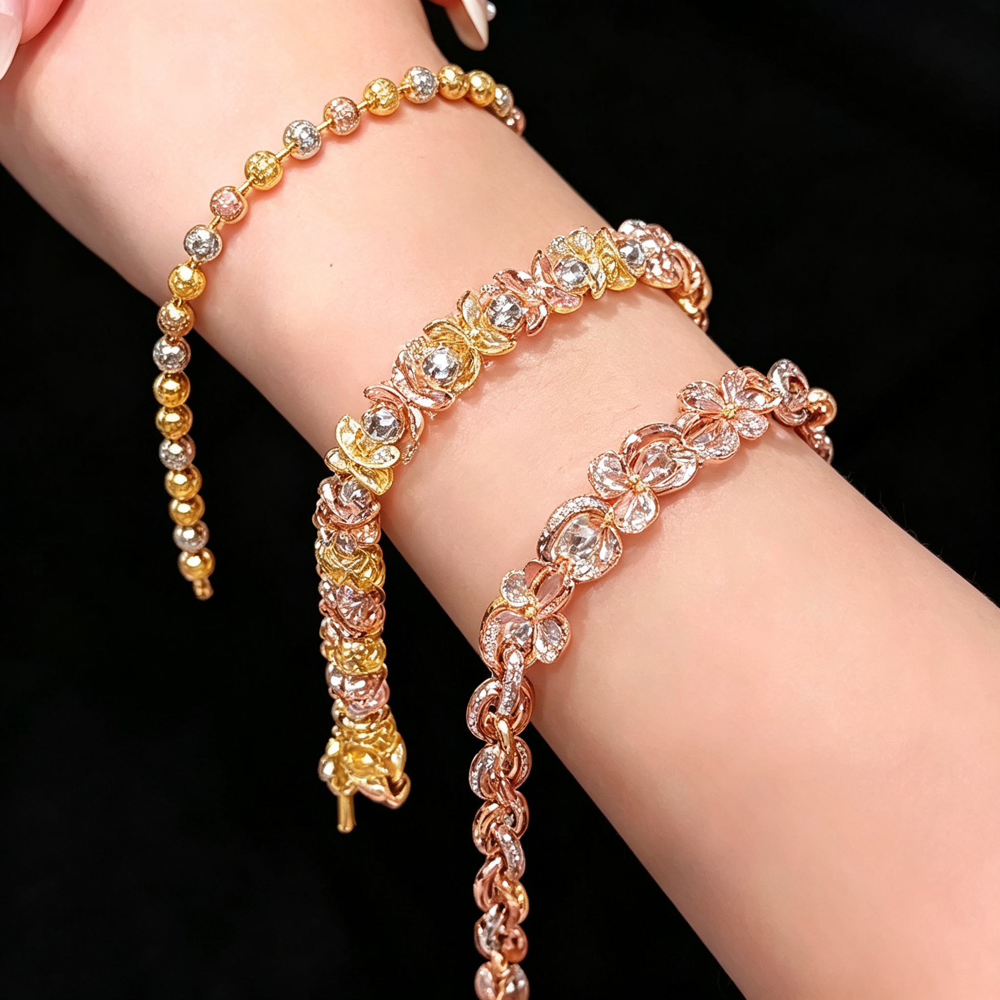
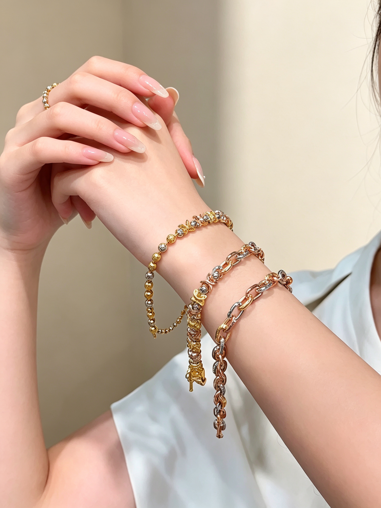
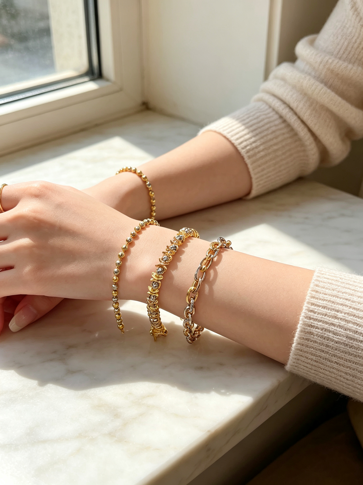
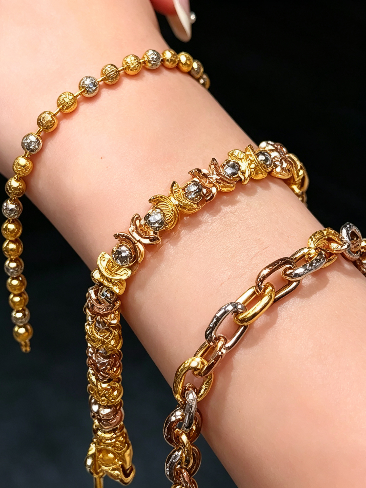
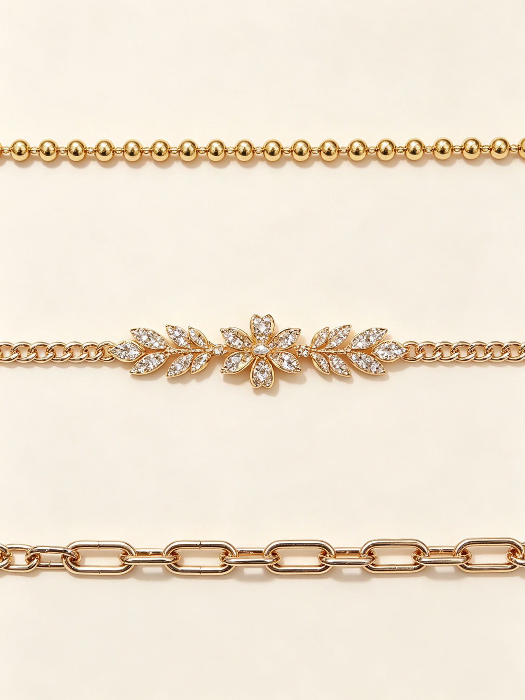
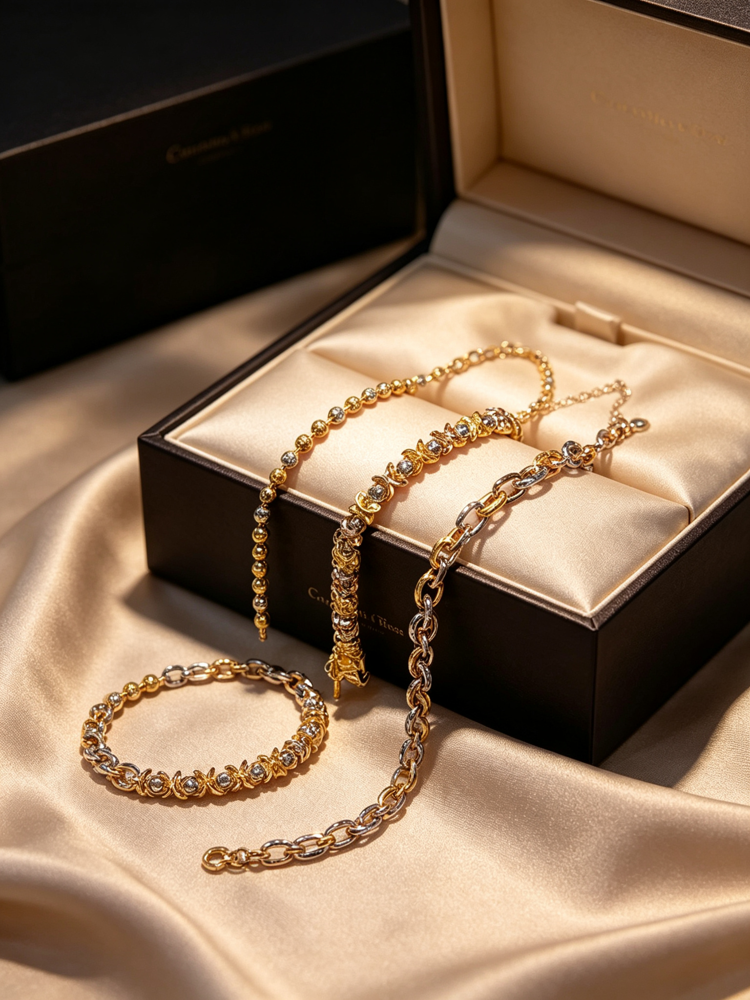

Beaded Chain · Floral Pave Chain
Two layered designs, three tones intertwined, effortless everyday luxury.

Two distinct metal bracelets blending yellow gold, rose gold, and silver tones. Wear them solo for understated elegance, or stack them together for layered dimension. From the playful movement of beaded chain to the delicate floral motifs, each piece has its own character.
From playful beads to delicate florals, two chain styles for every look.

Smooth gold beads alternating with faceted crystal-cut spheres — light dances across every angle, playful and refined.

Petal-shaped links set with clear stones, woven in gold and rose gold — soft, romantic, and endlessly sparkling.
By the window light or at your desk, these stacked bracelets elevate any everyday look.


Every link, every bead, every stone — made to hold up to close inspection.
Multi-cut bead surfaces reflect light from every angle for a lively, dynamic shine.
Clear stones set within petal-shaped links refract light for delicate brilliance.
Yellow gold, rose gold, and silver tones transition naturally for layered depth.

Wear them alone for clean simplicity, or stacked for rich, layered dimension.


A dark premium jewelry box with silk lining — a ritual from the first glimpse to the first wear.